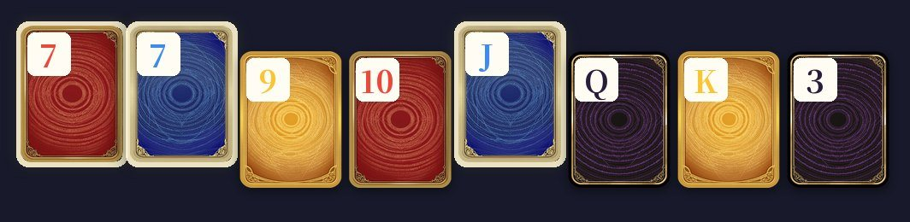
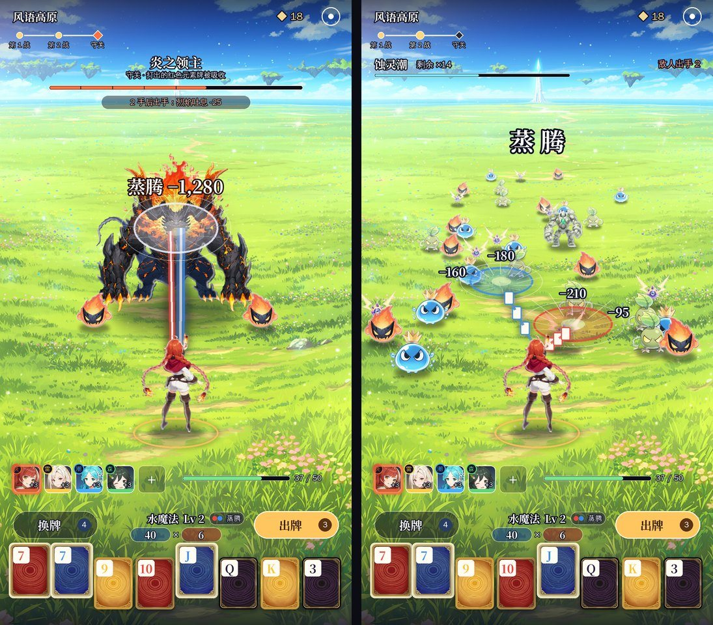
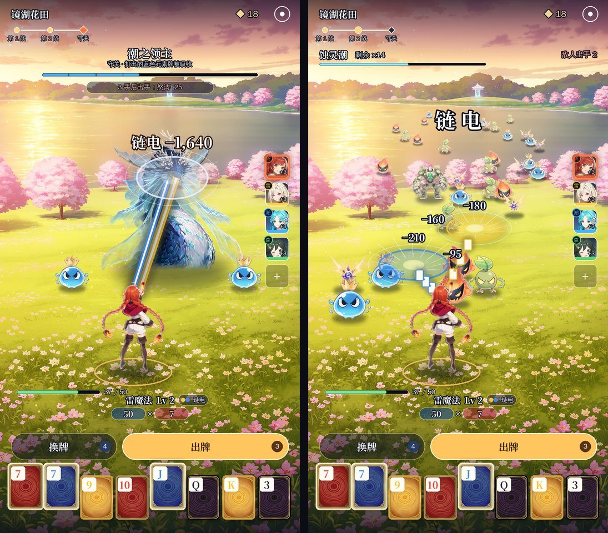

二代方案 v12：《源神：元素牌》战斗界面——身后视角拉远、主角全身入镜
- 日期：2026-11-12
- 你对 v11 的反馈：
- 视角用 B3（在主角身后、看向远处），但镜头要拉远一些，主角要像 A3 一样全身显示出来；
- 元素牌用红、黄、蓝、黑四种颜色区分就行，不用额外包装；
- 出牌和换牌按钮放在牌的上方；
- 按这个思路出两套，再按我自己的想法出一套。
- 这一版：
- D1 风语高原、D2 镜湖花田：按你的思路做的两套，场景不同，界面排法也不同；
- D3 队伍同框：我的想法，四位伙伴一起站在场景里，不要头像栏。
- 和之前一样是效果图，还没做进游戏。每套左边单挑守关，右边群怪 AOE。
0. 结论先说
| 方案 | 场景 | 界面排法（从下往上） | 适合 |
|---|---|---|---|
| D1 风语高原 | 开阔草原，地平线压到屏幕上方，远处一座发光的塔 | 手牌 → 一排：换牌 · 元素魔法 · 出牌 → 伙伴头像牌 + 血量 | 最稳：按钮和魔法名都在拇指附近，信息集中 |
| D2 镜湖花田 | 傍晚的湖边花田，远处山坡上有座小神社 | 手牌 → 换牌（窄）+ 出牌（宽）→ 元素魔法 + 血量；伙伴头像牌竖排在右边 | 出牌键最大最好按，下半屏更干净 |
| D3 队伍同框（我推荐） | 和 D1 同一片草原 | 手牌 → 换牌 · 元素魔法 · 出牌 → 血量；四位伙伴就站在场景里 | 最像原神：一队人一起打怪。少了头像栏，界面最干净，伙伴存在感最强 |
推荐 D3： - 伙伴是二代最大的卖点。D3 让四位伙伴一直站在场景里：这一手触发了谁，谁脚下就亮圈、头顶跳出数值，攻击也从她身上打出去； - 点角色就能看全身立绘，所以头像栏不需要了，下半屏只剩血量、按钮和手牌。 - 代价：每位伙伴要多画一张背影立绘（和正面立绘同一个人），站位最多 5 人。
三套共同的做法： - 镜头在主角身后、比 B3 高一点、拉远一些：主角全身站在下方三分之一处，地平线在屏幕上方，中间大片草地留给怪。 - 怪越远越小；守关首领站在主角正前方，体型是主角的一倍半到两倍。 - 远处的地标（塔、神社）加上「第 1 战 → 第 2 战 → 守关」的进度条，就是向前的引导。 - 元素牌只用红、黄、蓝、黑四色区分，牌面只写点数（见下图）。 - 出牌、换牌按钮在牌的上方。

1. D1 风语高原

- 主角全身站在下方，脚下一圈光环；怪群从远处的塔那边铺满草原压过来。
- 界面从下往上：8 张元素牌 → 一排「换牌 · 元素魔法名 + 元素力 × 倍率 · 出牌」→ 伙伴头像牌和血量。
2. D2 镜湖花田

- 傍晚的湖边花田，暖色调；远处山坡上有座小神社。
- 界面从下往上：8 张元素牌 → 窄的「换牌」+ 宽的「出牌」→ 元素魔法名、元素力 × 倍率、血量。伙伴头像牌竖排在右边（照原神的队伍栏）。
3. D3 队伍同框（我的想法）

- 四位伙伴站成一道浅弧，都背对镜头面朝敌人。
- 这一手触发了谁，谁脚下亮起自己颜色的圈，头顶跳出「+3 倍率」，飞牌和光束也从她身上打出去（图里是红、蓝两位）。
- 不要头像栏。点场景里的角色就弹出全身立绘和技能（弹窗见第 5 节）。
- 界面从下往上：8 张元素牌 → 「换牌 · 元素魔法 · 出牌」→ 血量。
- 第 5 位伙伴（第 5 个装备格）站在最后排正中。
4. 场景和怪物怎么结合（回答「没有很好的结合」）
| 做法 | 现在 | 方案里 |
|---|---|---|
| 站在地上 | 怪是一排排贴在背景前面的 | 每只怪的脚底落在场景的地面上，离得越远越小（镜头拉远后远近差得更多，远处的怪很小） |
| 影子 | 没有 | 每只怪脚下都有一块和场景光一个方向的影子 |
| 光线 | 怪自带的颜色和背景不一样 | 怪按场景的光调色（高原偏白偏亮，湖畔傍晚偏暖），边上加一圈场景光颜色的轮廓光 |
| 远近 | 没有 | 远处的怪往天空色淡一点（空气透视），近处的清楚 |
| 从哪来 | 凭空出现 | 从远处地标那边压过来：高原从塔的方向，湖畔从神社的方向 |
| 首领和场景 | 和小怪一样贴着 | 首领站在主角正前方，背后是远处的地标 |
| 特效 | 白色飞牌 | 牌的元素色决定光束和圆环的颜色，落在地面上，带透视（圆环压成椭圆） |
这些在游戏里都能做：脚底影子、调色和淡出都是给怪物图片加一层颜色和透明度，NanoVG 本身就支持；地面透视就是按怪物脚底的高度算缩放。v8 实机已经有「按排缩放」，改成按场景的地面算就行。
5. 伙伴头像牌（替换一代的装备图标）

| 点开：全身立绘 + 技能 | 说明 |
|---|---|
 |
在战斗中点头像牌，整个界面压暗，弹出全身立绘、名字、元素、星级和技能。技能就是一代那件装备的效果（焰绯 = 一代「打出红桃每张倍率 +3」那件）。底下一排头像可以左右切换。 |
- 头像牌：D1 放在按钮上方，D2 竖排在右边；D3 不用头像牌，直接点场景里的角色。
- 出牌时触发了哪位伙伴，她的头像就亮一下，并弹出数值（就是一代装备触发时的跳字）。
- 一代 150 件装备里，常用的约 30 件做成伙伴，其余做成「器物」，用器物图标。
6. 用词（已改进游戏）
| 东西 | 叫法 |
|---|---|
| 牌 | 元素牌，只用红、黄、蓝、黑四色区分，牌面只写点数 |
| 牌型 | 元素魔法，沿用一代的名字：火魔法（高牌）、水魔法（对子）、风魔法（两对）、土魔法（三条）、冰魔法（顺子）、雷魔法（同花）、光明魔法（葫芦）、黑暗魔法（四条）、时间魔法（同花顺）…… |
| 这一手的花色组合 | 反应名（纯表现，不改分数）：蒸腾、爆燃、燎原、链电、萌发、雷藤 |
| 装备 | 伙伴 |
7. 选定之后怎么做
- 按选定的方案重写战斗界面：去掉横穿的血条和装备面板，界面全部改成透明或半透明。
- 怪物站位改成按场景的地面来排，加影子、调色和轮廓光。
- 装备栏换成伙伴头像牌，加点开看立绘的弹窗。
- 八段路每段出一张场景图，都用同一个镜头：地平线在屏幕上方，远处有地标，中间大片空地。选 D3 的话，每位伙伴再出一张背影立绘。
- 做好后录实机截图和录屏给你看。
8. 要你定
- 选 D1、D2，还是 D3（推荐）？也可以混搭，比如用 D3 的队伍同框，配 D2 的大出牌键。
- 场景：高原、湖畔这两种的方向对不对？定了我就按同一个镜头出完八段。
- 名字：还用《源神：元素牌》吗？之前提过，这个名字有被当成仿冒《原神》的风险。
- 伙伴全是女性角色，还是男女都有？
9. 附：上一版 v11
| v11 A3 俯视 + 软引导 | v11 B3 越肩（这一版的基础） |
|---|---|
 |
 |
10. 之前的方案
| 版本 | 内容 | 结果 |
|---|---|---|
| v11 | A3 俯视 + 软引导 / B3 越肩开阔（docs/v2/立项方案_v11.md） |
用 B3 视角、镜头拉远、主角全身入镜 → v12 |
| v10 | A2 云上天路（一条路通到天门）/ B2 天穹大道（docs/v2/立项方案_v10.md） |
引导太硬，不一定是一条路 → v11 |
| v9 | 战斗界面三套：A 浮岛祭坛 / B 林间长路 / C 断崖斜阵（docs/v2/立项方案_v9.md） |
A 像开放世界、B 太压抑 → v10 |
| v8 | 《源神：元素牌》题材包装 + 实机换皮（docs/v2/立项方案_v8.md） |
题材定了；战斗界面太乱 → v9 |
| v7 | 扑克地牢（战斗照《吸血鬼爬行者》，实机） | 战斗框架保留 |
| v6 | 调色师（实机切片） | 没有正常战斗的体验 |
| v5 | 乐队 / 调色 / 烟花（概念图） | 选了调色 → v6 |
| v4 | 新怪谈 / 深海 / 地府 | 和玩法不搭、画风低 |
| v3 | 仙门降妖（第一次照《宗师之上》做布局） | 题材不新、页游感 |
| v2 / v1 | 武侠 / 末日 | — |